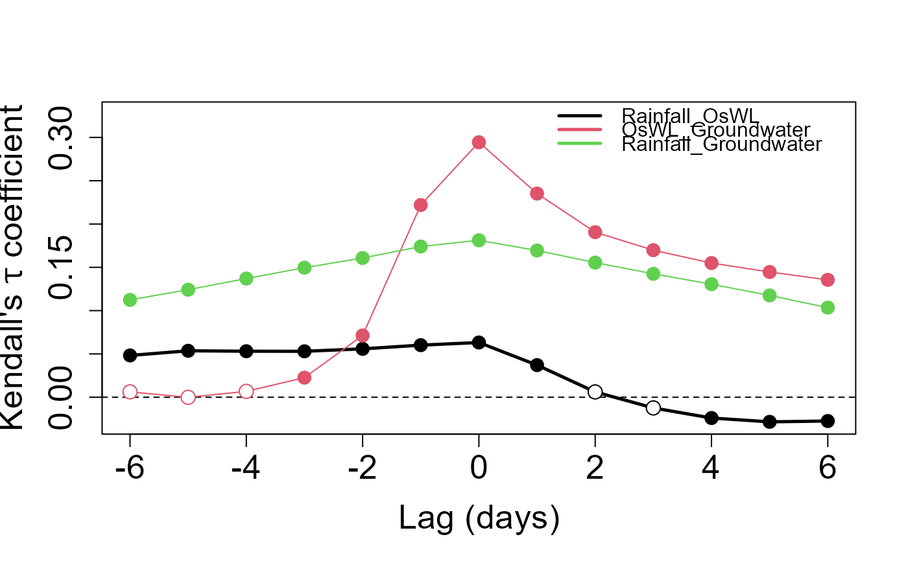

Kendall's tau correlation coefficient between pairs of variables over a range of lags
Kendall_Lag.RdKendall's tau correlation coefficient between pairs of up to three variables over a range of lags
Usage
Kendall_Lag(Data, Lags = seq(-6, 6, 1), PLOT = TRUE, GAP = 0.1)Arguments
- Data
A data frame with 3 columns, containing concurrent observations of three time series.
- Lags
Integer vector giving the lags over which to calculate coefficient. Default is a vector from
-6to6.- PLOT
Logical; whether to show plot of Kendall's coefficient vs lag. Default is
TRUE.- GAP
Numeric vector of length one. Length of y-axis above and below max and min Kendall's tau values.
Value
List comprising Kendall's tau coefficients between the variables pairs composing columns of Data with the specified lags applied to the second named variable Values and the p-values Test when testing the null hypothesis H_0: tau=0 i.e. there is no correlation between a pair of variables. Plot of the coefficient with a filled point of hypothesis test (p-value<0.05). Lag applied to variable named second in the legend.
Examples
Kendall_Lag(Data=S20.Detrend.df,GAP=0.1)

#> $Value
#> $Value$Rainfall_OsWL
#> [1] 0.04824345 0.05360857 0.05311093 0.05301050 0.05585930 0.06013031
#> [7] 0.06319168 0.03708788 0.00611596 -0.01238316 -0.02403418 -0.02843050
#> [13] -0.02749489
#>
#> $Value$OsWL_Groundwater
#> [1] 0.0061878332 -0.0001336233 0.0067491799 0.0225829028 0.0712846885
#> [6] 0.2219946518 0.2944450881 0.2351774817 0.1906015440 0.1697976314
#> [11] 0.1549534945 0.1446051038 0.1355488547
#>
#> $Value$Rainfall_Groundwater
#> [1] 0.1124016 0.1241696 0.1370383 0.1495726 0.1607862 0.1740401 0.1812580
#> [8] 0.1694121 0.1554885 0.1424930 0.1305349 0.1175473 0.1034675
#>
#>
#> $Test
#> $Test$Rainfall_OsWL_Test
#> [1] 7.702412e-14 1.099852e-16 9.099226e-17 1.171382e-16 4.858966e-18
#> [6] 1.390336e-20 1.441933e-21 4.832354e-08 2.558515e-01 1.439098e-01
#> [11] 3.273781e-03 2.239132e-04 1.387690e-04
#>
#> $Test$OsWL_Groundwater_Test
#> [1] 3.712367e-01 9.859701e-01 3.107798e-01 1.211486e-03 7.104786e-24
#> [6] 3.473393e-214 0.000000e+00 6.285217e-240 2.455676e-158 4.939083e-126
#> [11] 3.158396e-105 8.118401e-92 7.869042e-81
#>
#> $Test$Rainfall_Groundwater_Test
#> [1] 5.001139e-78 1.712639e-94 2.191980e-115 1.231068e-138 2.386969e-159
#> [6] 6.774798e-186 3.286516e-200 6.770706e-175 4.057853e-145 6.889537e-120
#> [11] 2.474487e-98 1.356281e-77 2.310065e-58
#>
#>